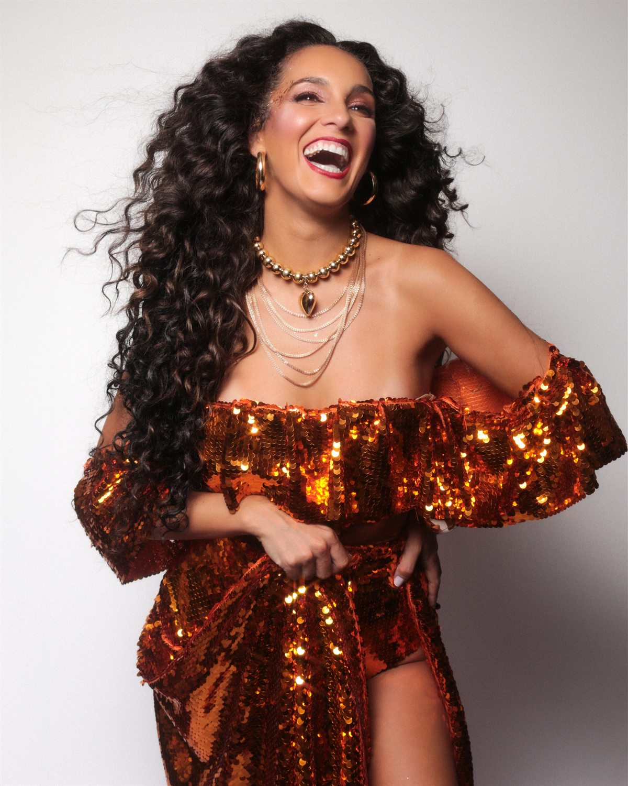
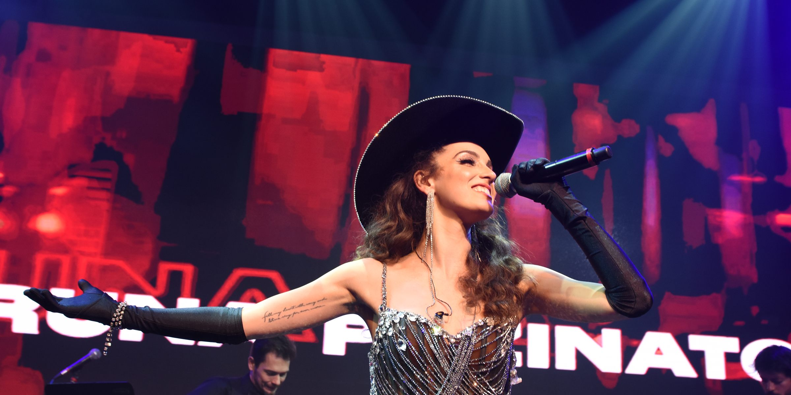

A artista
Trajetória

De Santa Bárbara do Sul à Consolação
Aos doze anos, no interior gaúcho, já se apresentava em festivais e CTGs. Em 2026, cantou para um milhão e meio de pessoas na Rua da Consolação.
Aos dezessete, deixou Santa Bárbara do Sul para morar em São Paulo, e foi lá que o teatro musical começou. De lá para cá são quatro anos seguidos no palco: viveu a própria Clara Nunes em 2023, foi Maria Eugênia em Cassia Eller no ano seguinte, a Lagarta de Alice de Cor e Salteado em 2025, e em 2026 esteve em duas — Lúcia Veríssimo em Gal, O Musical e Marlene Dietrich em Piaf, Eu Não Me Arrependo.
Na televisão, estreou em 2017 como a cantora Rebeca, de O Rico e Lázaro, papel que cresceu ao longo da novela, e foi a protagonista de Lia, as duas na Record. Na música, lançou Alucinação, que considera o seu hit, Imaginei Você e Afrodisíaca. E no carnaval é uma das vozes do Acadêmicos do Baixo Augusta, o maior bloco de rua de São Paulo, onde desfilou em 2025 e 2026.
“Atriz e cantora de primeira grandeza, jovem estrela reluzente, Bruna Pazinato vale a noite no teatro.”
Tania Brandão · Folias Teatrais, sobre Clara Nunes
